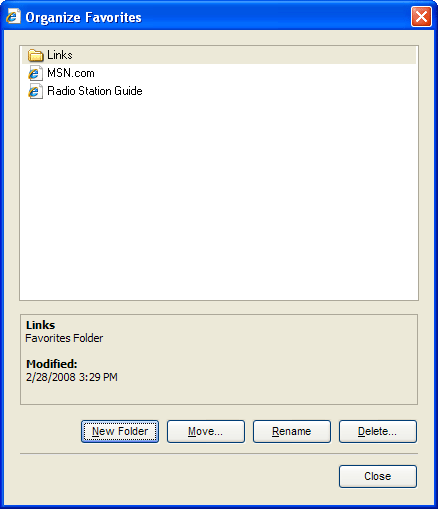
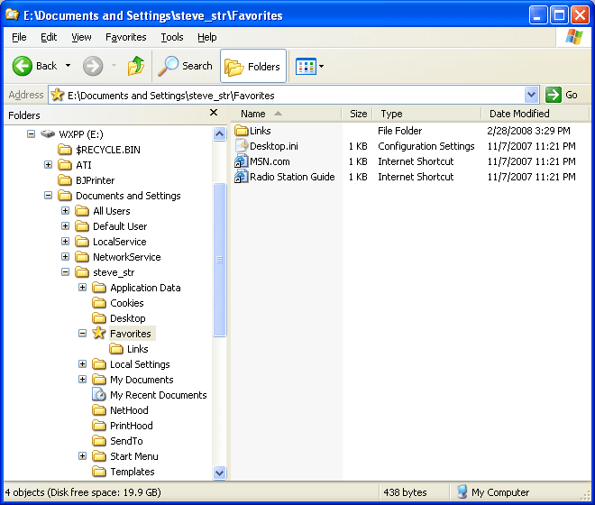

Version: Default* | Print Friendly With Images | Print Friendly Without Images
For: Internet Explorer 5, 6, 7
Last Reviewed/Updated: 18 Jun 2013 | Published: 11 May 2001 | Status: Active
An Internet Explorer (IE) Favorite is an Internet shortcut that loads a URL into Internet Explorer. Each IE Favorite exists as a single file that, like other data files (e.g., .doc Word files and .xls Excel files), can be created, deleted, moved, copied, renamed, and edited.
Neither Windows nor Internet Explorer provides a method for backing up and restoring IE Favorites. Internet Explorer provides a method for organizing IE Favorites which uses a button driven interface that is cumbersome:

A far more efficient method for organizing IE Favorites is to access and modify the IE Favorites files and folders directly with My Computer and/or Windows Explorer:

Using My Computer and/or Windows Explorer to access and modify the IE Favorites files and folders, IE Favorites and folders can be created, deleted, moved, copied, renamed, and edited like other data files, and the changes immediately appear in IE. Moreover, once you know how to access the IE Favorites files and folders, backing up and restoring IE Favorites is as simple as copying them to and from removable media like other data files.
2. Location Of The IE Favorites Files And Folders
The IE Favorites files and folders are located in the Favorites folder. The Favorites folder is located as follows:
3. Quickly Back Up And Restore IE Favorites With My Computer Or Windows Explorer
3.1. Quickly Back Up IE Favorites With My Computer Or Windows Explorer
3.2. Quickly Restore IE Favorites With My Computer Or Windows Explorer
4. Quickly Organize IE Favorites With My Computer Or Windows Explorer